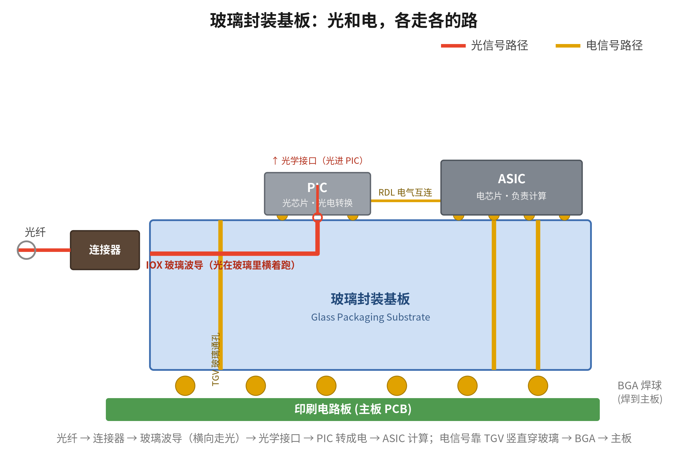
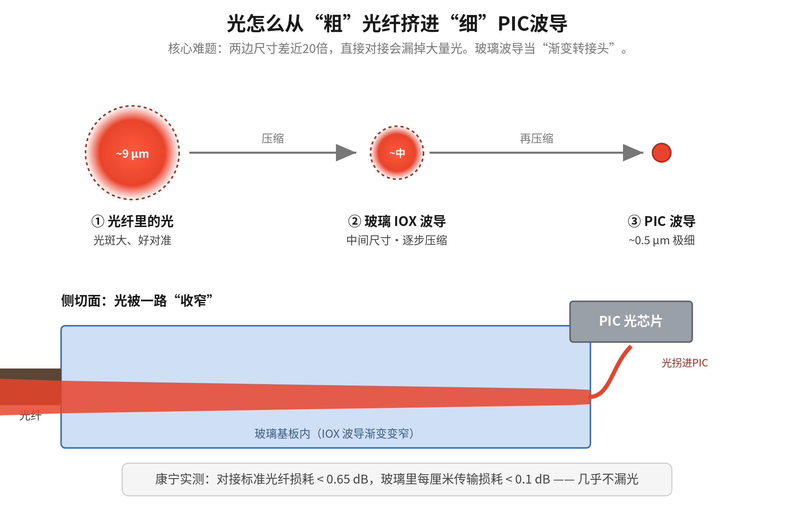
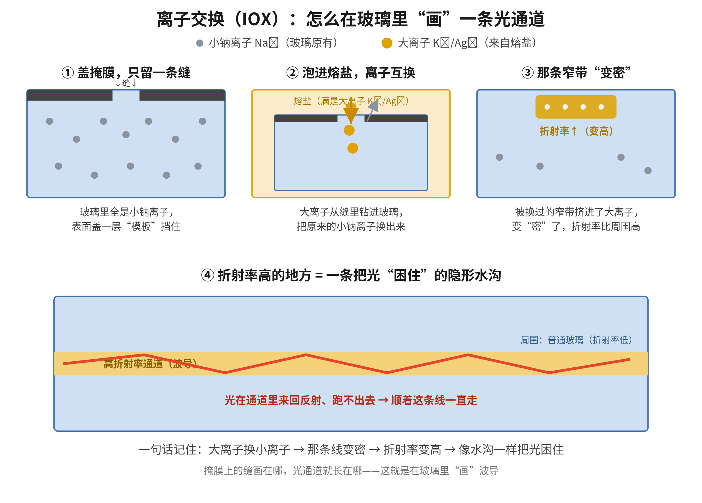
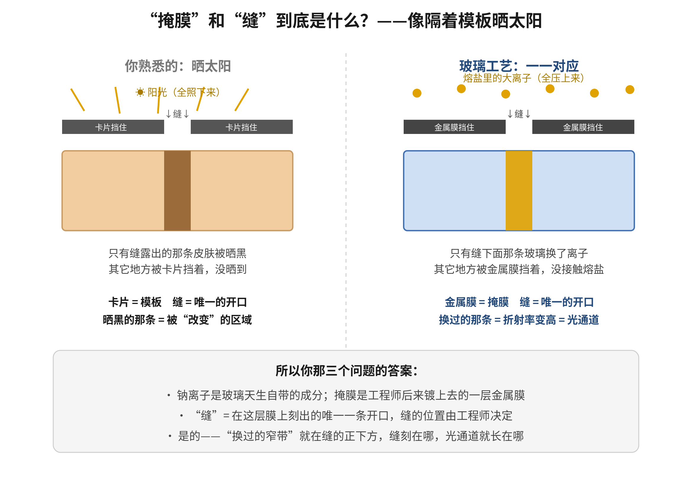
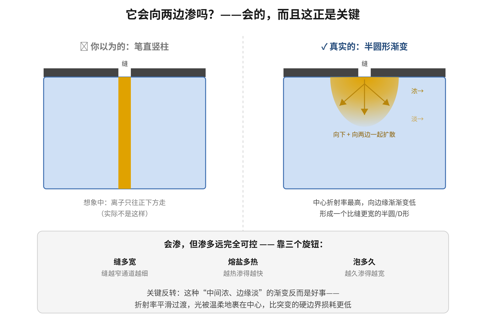
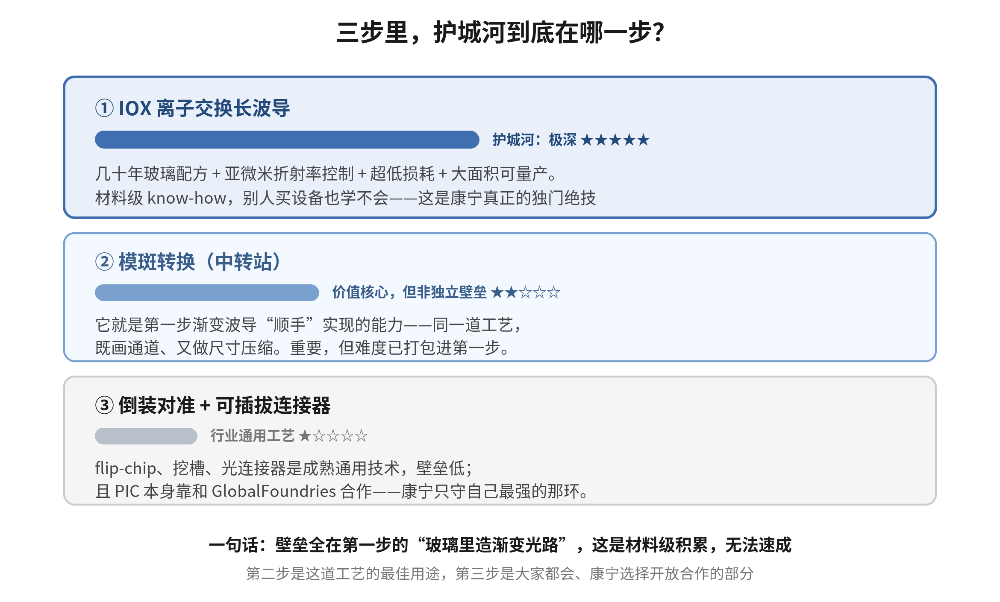
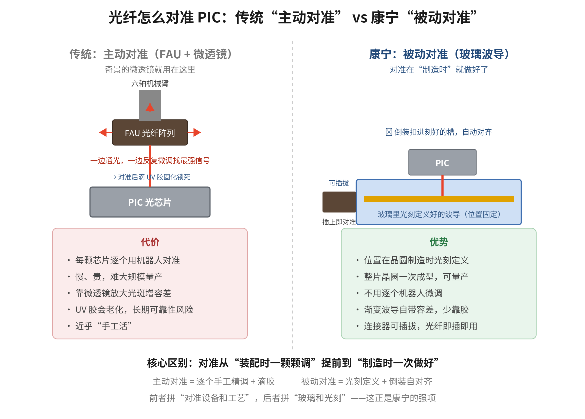

康宁 Glass Bridge 与玻璃光电封装
从一张剖面图读懂：光纤如何被“画”进芯片
费曼式科普整理 · 2026 年 6 月
导读
这份文档把一次围绕“康宁 Glass Bridge / 玻璃光电封装”的问答，系统沉淀成一份可反复查阅的科普资料。起点是一张技术讲座里的剖面图——它画的是光信号如何从一根光纤，一路走进做计算的芯片。围绕这张图，我们一层层追问：康宁这项技术是什么、为什么重要；光纤到底怎么“直接耦合”进光子芯片；支撑这一切的离子交换工艺如何在玻璃里“画”出隐形光路；这项技术的护城河在哪一步；以及它和传统 FAU 对准方案相比，新在何处、对产业链意味着什么。
讲解坚持“先大白话、再上术语”的费曼风格：每个概念先用比喻讲清“是什么、为什么”，再补充数据与专业名词；适合对比的内容用表格呈现。全文配有 7 张重新绘制的示意图，分别嵌在它所解释的段落旁。引用到的具体数据和事实，以脚注标注来源，文末另附来源汇总。
目录
第一部分 先看懂那张图：玻璃封装基板全景 3
1.1 这张剖面图在画什么 3
1.2 一句话抓住精髓 4
第二部分 康宁 Glass Bridge 是什么，为什么重要 5
2.1 它要解决的根本矛盾：带宽墙 5
2.2 CPO（光电共封装）是什么 5
2.3 它影响的是 AI 芯片，不是消费级 CPU 5
第三部分 光怎么从光纤走进 PIC：三步拆解 6
3.1 第一步：在玻璃里“长”出波导 6
3.2 第二步：用玻璃当“中转站”做模斑转换 6
3.3 第三步：结构上让对准“自动化” 7
第四部分 核心工艺揭秘：离子交换（IOX）怎么在玻璃里画光路 8
4.1 四步流程：从钠离子到隐形光通道 8
4.2 “掩膜”和“缝”到底是什么 9
4.3 它会向两边渗吗：渐变折射率的秘密 10
第五部分 护城河在哪：三步里哪一步最核心 11
5.1 为什么偏偏是康宁能做到 12
第六部分 新旧对决：康宁被动对准 vs 传统 FAU 主动对准 13
6.1 传统怎么做：主动对准（FAU + 微透镜） 13
6.2 康宁怎么做：被动对准（玻璃波导） 13
6.3 会取代 FAU 吗？对奇景是不是利空 14
附录 关键数据与来源汇总 15
第一部分 先看懂那张图：玻璃封装基板全景
1.1 这张剖面图在画什么
这是一张芯片封装的剖面图（侧切面）。从左到右、从下到上，它描述的是“光信号怎么从一根光纤一路走进芯片里”。按信号的流向，可以这样拆解：

图 1 玻璃封装基板剖面图：光信号（红）与电信号（黄）在同一块玻璃上各走各的路
最左边是光纤（Optical Fiber），传数据的玻璃丝，光在里面跑。
连接器（Connector）是光纤插进来的接口，相当于插座——这里正是康宁 Glass Bridge 干活的地方。
IOX glass waveguides（离子交换玻璃波导）是关键：在那块蓝色玻璃板里，康宁“种”出了一条条看不见的光通道。光从光纤进来，顺着玻璃里的通道横向跑到 PIC 下方。
PIC（光子集成电路，即“光芯片”）负责把光信号和电信号互相转换；玻璃里的波导和 PIC 自己的波导，在“光学接口（Optical interface）”这个位置对接，光就从玻璃传进了 PIC。
ASIC 是右边那块大芯片，真正做计算的电芯片（比如 AI 加速芯片、交换芯片）。它和 PIC 都用焊球（黄色小球）贴在同一块玻璃板上。
蓝色的玻璃封装基板（Glass packaging substrate）是整个东西的“底座”，就是一整块玻璃；TGV（Through-Glass Via，玻璃通孔）是在玻璃上打的竖直小孔、灌上金属，用来让电信号上下穿过玻璃。RDL / Electrical interconnects 是芯片之间传电信号的线路层。最底下用一排 BGA（球栅阵列）焊球把整块玻璃焊到印刷电路板（PCB）上。
1.2 一句话抓住精髓
这张图最精妙之处在于：一整块玻璃同时干三件事——竖着用 TGV 走电、横着用 IOX 波导走光、表面挖槽让光芯片（PIC）和电芯片（ASIC）都贴上去。光和电在同一块玻璃上各走各的路，互不打架。
第二部分 康宁 Glass Bridge 是什么，为什么重要
2.1 它要解决的根本矛盾：带宽墙
现在 AI 芯片的算力涨得飞快，但芯片之间、机柜之间传数据用的还是“电”。电信号传得越快、越远，就越费电、越发热、损耗越大，逐渐成了瓶颈，业界称之为“内存墙 / 带宽墙”。这正是 Glass Bridge 这类技术要解决的核心矛盾。
2.2 CPO（光电共封装）是什么
CPO（Co-Packaged Optics，光电共封装）的思路是：把光直接拉到芯片旁边，在芯片封装内部就完成“电转光”，然后用光纤往外传。光传数据几乎不衰减、不发热、带宽巨大。Glass Bridge 解决的是其中“光纤怎么干净利落地接进芯片”这一步，让它变得可量产、低损耗。
2.3 它影响的是 AI 芯片，不是消费级 CPU
第三部分 光怎么从光纤走进 PIC：三步拆解
“光纤通过波导直接耦合进 PIC”是这项技术的核心。难点在于：光纤的光要进 PIC，两者对准精度要求到微米甚至亚微米级，差一点点光就漏掉了。康宁的做法可以拆成三步理解。
3.1 第一步：在玻璃里“长”出波导
用一种叫离子交换（Ion Exchange，IOX）的工艺，在玻璃表面下精确“画”出一条条隐形光通道。这一步是康宁的看家本领，具体原理放在第四部分详细展开。
3.2 第二步：用玻璃当“中转站”做模斑转换
光纤里的光斑比较大（约 9 微米），PIC 上的波导很细（约 0.5 微米），两者直接对接会损耗很大。玻璃里的 IOX 波导尺寸介于两者之间，相当于一个渐变的转接头，把大光斑慢慢压缩到能塞进 PIC 的小尺寸，损耗大幅降低。

图 2 模斑转换：光从“粗”光纤经玻璃波导渐变压缩，塞进“细”PIC 波导
三段尺寸对比如下：
| 环节 | 光斑尺寸 | 特点 |
| ① 光纤（SMF-28） | 约 9 µm | 光斑大、容差大、好对准 |
| ② 玻璃 IOX 波导 | 中间尺寸 | 渐变转接头，逐步压缩光斑 |
| ③ PIC 波导 | 约 0.5 µm | 极细，是最终目的地 |
3.3 第三步：结构上让对准“自动化”
PIC 不是焊在玻璃上面、靠探针去够，而是翻过来扣在玻璃表面挖好的槽里（flip-chip，倒装），玻璃上的波导出口和 PIC 的波导入口在制造时就对好了位置。再加上 Glass Bridge 这个连接器是可插拔的，光纤插上去就自动对准，不用每颗芯片手工精调。
第四部分 核心工艺揭秘：离子交换（IOX）怎么在玻璃里画光路
4.1 四步流程：从钠离子到隐形光通道
玻璃在出厂时配方里本来就掺了钠，钠离子均匀分布在整块玻璃里——这是玻璃天生自带的。离子交换的做法是：把玻璃泡进熔盐里（注意是熔盐，不是熔岩），熔盐里的大离子（比如钾 K⁺、银 Ag⁺）会和玻璃表面的小钠离子（Na⁺）互换位置。被换过的那条窄区域，离子被挤得更“密”，折射率会变高。

图 3 离子交换（IOX）四步：盖掩膜留缝 → 泡熔盐互换 → 窄带变密 → 形成困住光的通道
为什么折射率高就能困住光？可以打个比方：光喜欢往折射率高（“密”）的地方待，碰到折射率低的边界会被反射回来（全反射）。所以那条被换过的窄带就成了一条“光的水沟”——光进去之后在里面来回弹、跑不出去，只能顺着沟一直往前走。整条因果链是：大离子换小离子 → 那条线变密 → 折射率变高 → 像水沟一样把光困住。
4.2 “掩膜”和“缝”到底是什么
这里要解开一个关键误会：钠离子是玻璃天生就有的，但掩膜不是。掩膜（模板）是工程师后加上去的一层薄膜——在玻璃表面镀一层很薄的金属膜，把整块玻璃盖得严严实实，然后用激光或化学方法在这层膜上刻出一条极细的缝。缝刻在哪，完全由工程师决定：想让光走哪条线，就把缝刻在哪。“缝”就是整张盖布上唯一露出玻璃的那一条细线。

图 4 用“隔着模板晒太阳”理解掩膜与缝：卡片=掩膜，缝=唯一开口，被晒黑/被交换的那条=光通道
为什么非要盖膜、留缝？因为如果把整块裸玻璃直接丢进熔盐，整块玻璃表面都会发生离子交换，折射率到处都变高，就没有“一条通道”了，光会乱跑。盖上膜、只留一条缝，就是为了控制离子只在那一条线上交换，从而精确地“画”出一条线状的光通道。换完之后那条高折射率的窄带，就在缝的正下方——缝在哪，光通道就在哪。
4.3 它会向两边渗吗：渐变折射率的秘密
一个很自然的疑问是：缝下面的交换，只会在缝的垂直范围内发生吗？会不会向左右两边蔓延？答案是：确实会向两边渗——因为离子交换的本质是扩散。大离子从缝钻进玻璃后，是往“浓度低的地方”乱挤的，既往下走，也往左右两边走。所以缝下面真实的形状不是一根竖线，而是一个半圆形 / D 字形，比缝本身要宽一些。

图 5 离子的横向扩散：缝下方形成“中间浓、边缘淡”的半圆形渐变区，而非笔直竖柱
但它不会失控，原因有三：第一，渗多远是可控的，靠三个旋钮——缝多宽、熔盐多热、泡多久；泡得越久越热渗得越宽，想要细通道就把缝刻窄、时间控短，泡够了把玻璃捞出来，扩散立刻停。第二，这种“中间浓、边缘淡”的渐变折射率反而是好事：光最怕折射率突变的“硬边界”，容易在边界上散射、漏光，而平滑渐变能把光温柔地裹在中心，几乎不散射。这正是康宁波导损耗能做到极低的原因。第三，这其实已经触及光波导设计里最核心的“渐变折射率（graded-index）”概念。
第五部分 护城河在哪：三步里哪一步最核心
判断一项技术的壁垒，要看它“难复制的根在哪”。把前面的三步放在一起比较，结论很清楚：最核心、最难、别人最难复制的是第一步；第二步其实是第一步“顺便”实现的；第三步是必要工程，但相对通用、需要合作。

图 6 三步护城河深浅对比：壁垒集中在第一步“在玻璃里造渐变光路”
| 步骤 | 护城河 | 为什么 |
| ① IOX 离子交换长波导 | 极深 ★★★★★ | 几十年玻璃配方 + 亚微米折射率控制 + 超低损耗 + 大面积可量产，是材料级 know-how，买设备也学不会 |
| ② 模斑转换（中转站） | 价值核心，非独立壁垒 ★★☆☆☆ | 它就是第一步渐变波导“顺手”实现的能力，同一道工艺既画通道又压缩光斑，难度已打包进第一步 |
| ③ 倒装对准 + 可插拔连接器 | 行业通用 ★☆☆☆☆ | flip-chip、挖槽、光连接器是成熟通用技术；PIC 本身靠与 GlobalFoundries 合作 |
换个角度看本质：第三步的工艺，各大封装厂、光模块厂都会，是行业公共知识；第二步的“模斑转换”概念，光学教科书里就有。唯独第一步——在玻璃里精确造出超低损耗的渐变折射率波导——是康宁几十年做光纤攒下的、写在材料配方和工艺参数里的隐性知识，没法靠挖人或买设备在两三年内追上。所以第一步是真正的“根”，第二步是这个根结出的“果”。
5.1 为什么偏偏是康宁能做到
康宁给人的印象是“卖玻璃材料的”（光纤、手机盖板玻璃、显示面板玻璃），但恰恰是这个底子让它在 CPO 上有别人难以复制的优势。
第一，它是世界上最懂玻璃成分和折射率的公司。光纤的本质就是“精确控制玻璃不同区域的折射率，让光被困在芯里跑”——康宁做了几十年光纤，对“怎么在玻璃里造一条光通道”的理解是材料级的；IOX 波导本质上是同一套物理在平面玻璃上的延伸。
第二，它能做晶圆级、大面积的均匀玻璃。CPO 玻璃基板要又大又平又均匀，还要能打 TGV 通孔，对玻璃纯度和工艺一致性要求极高，恰好是康宁的制造强项。
第三，它同时握着“光”和“封装”两端。一般做封装基板的公司不懂光纤，懂光纤的不会做封装玻璃；康宁两边都有，所以能把“走电的 TGV + 走光的 IOX 波导 + 装芯片的玻璃基板”做进同一块玻璃里。
第六部分 新旧对决：康宁被动对准 vs 传统 FAU 主动对准
传统方法和康宁方法的根本区别，是“主动对准”与“被动对准”之分。这是理解一切的钥匙。
6.1 传统怎么做：主动对准（FAU + 微透镜）
6.2 康宁怎么做：被动对准（玻璃波导）
康宁这条路：对准不在装配时做，而在玻璃制造时就用光刻定义好了。波导位置固定，PIC 倒装一扣就自动对齐，连接器还可插拔。这叫被动对准——整片晶圆一次成型，不用逐个机器人调。

图 7 传统“主动对准”（FAU + 微透镜 + 滴胶）与康宁“被动对准”（光刻定义 + 倒装自对齐）对比
| 对比维度 | 传统：主动对准（FAU） | 康宁：被动对准（玻璃波导） |
| 对准方式 | 六轴机器人逐个通光微调 | 晶圆制造时光刻一次定义 |
| 生产效率 | 每颗单独对准，慢、贵 | 整片晶圆一次成型，可量产 |
| 容差来源 | 靠微透镜放大光斑 | 渐变波导自带容差 |
| 固定方式 | 滴 UV 胶固化，胶会老化 | 倒装自对齐，少靠胶；连接器可插拔 |
| 拼的是 | 对准设备和工艺 | 玻璃和光刻（康宁强项） |
6.3 会取代 FAU 吗？对奇景是不是利空
方向上康宁是冲着同一个问题去的，但说“取代”还太早，更准确的说法是“用一条新路线去抢 FAU 的活”。康宁的杀伤力在于：如果它的被动对准能大规模量产、损耗又低，那么“机器人主动对准 + 微透镜”这套传统活的需求就会被压缩——这正是“利空”逻辑的来源。
一句话记住：康宁动的是“怎么把光纤对准 PIC”这个环节——它想用“玻璃 + 光刻”把这件事自动化，替代掉“机器人 + 微透镜 + 胶”的老办法。谁的护城河建在老办法里，谁就要警惕。
附录 关键数据与来源汇总
| 数据 / 事实 | 来源 |
| 对接 SMF-28 光纤耦合损耗 < 0.65 dB；1310nm 传输损耗 < 0.1 dB/cm | IMAPS《Glass Substrate for Co-Packaged Optics》；康宁 GlassBridge 产品页 |
| Glass Bridge 于 2026-06-24 在首尔发布 | The Elec《Corning Unveils Glass Bridge for CPO and Glass-Core Packaging》 |
| 康宁与 GlobalFoundries 2025-09 合作可拆卸光纤连接方案 | 康宁官网新闻稿（2025-09） |
| 奇景光电是台积电 COUPE 微透镜独家供应商 | TechNews，郭明錤（2025-01-23） |
| 奇景光电 2024-06 入股上詮科技 FOCI | OFweek 光通讯网（2024-06） |
说明：本文为科普整理，不构成任何投资建议。文中“利空 / 机会”相关判断仅为技术与产业层面的事实陈述与情景分析。